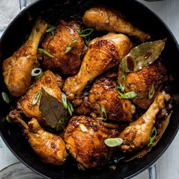

Chicken Adobo

Description
Chicken Adobo is a type of Filipino chicken stew. Chicken pieces are marinated in soy sauce and spices, pan-fried, and stewed until tender.
Ingredients
- 2 lbs chicken
- 3 pieces dried bay leaves
- 8 tablespoons soy sauce
- 4 tablespoons white vinegar
- 5 cloves garlic
- 1 1/2 cups water
- 3 tablespoons cooking oil
- 1 teaspoon sugar
- 1/4 teaspoon salt
- 1 teaspoon whole peppercorn